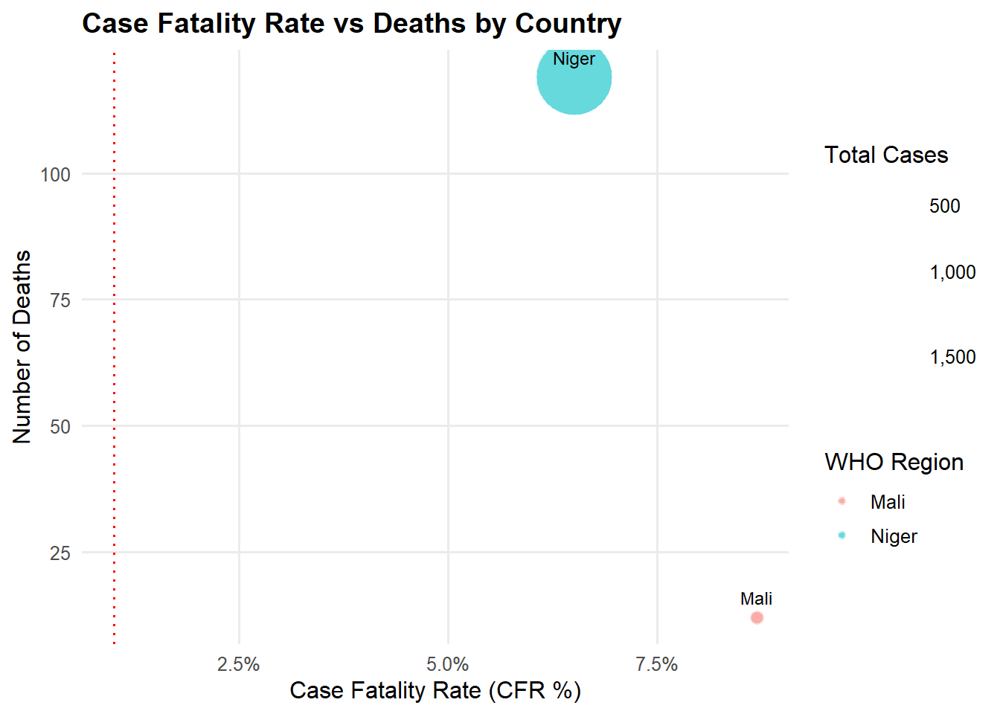

WHOAFRO/DPC: Diphtheria Slideck Update, 2025
Regional Diphtheria Cases by Week
1 January 2025 to 3 October 2025
Please interpret the data presented here with caution due to reporting delays in several countries, especially fro the most recent weeks. Figures may also vary based on data availability
Weekly Diphtheria cases by Countries
Spikes in case counts due to batch reporting and retrospective adjustments
Summary Outbreak Indicators, 2025
- In 2025, as of 03 October, the African Region has reported 1,940 cases and 128 deaths across 2 countries.
- In the last 28 days, 256 new cases were reported, reflecting a decrease of about 55% compared to the previous 28-day period.
- In the last month, Mali (40), Niger (216) accounted for 70% of the regional cases.
- The region CFR for this period is 5.5%, with Niger exceeding the emergency threshold of 1%
| Summary of Outbreak Indicators for 2025: AFRO | ||||||||
|---|---|---|---|---|---|---|---|---|
| Last 28 days | ||||||||
| Total Cases (2025) |
Total Deaths (2025) |
Cases (Last 28d) |
Deaths (Last 28d) |
CFR (28d, %) |
Monthly Cases Change (%) |
Monthly Deaths Change (%) |
Weekly Cases (2025) |
|
| Mali | 135 | 11 | 40 | 0 | 0.0 | 471.4 | NA | |
| Niger | 1,738 | 114 | 216 | 14 | 6.5 | 36.7 | 16.7 | |
| Total | 1,873 | 125 | 256 | 14 | 5.5 | 55.2 | 16.7 | |
| Data Source: World Health Organization African Region / DPC | ||||||||
Please interpret the data presented here with caution due the reporting delays in several countries, especially for the most recent weeks. Figures may also vary based on data availability
Mortality by Country

As many countries report only total deaths, CFR is calculated using all reported deaths, GTFCC recommends calculating CFR from facility deaths only, with community deaths reported separately. Please note that this plot only includes countries reporting at least 100 cases in the last eight weeks.